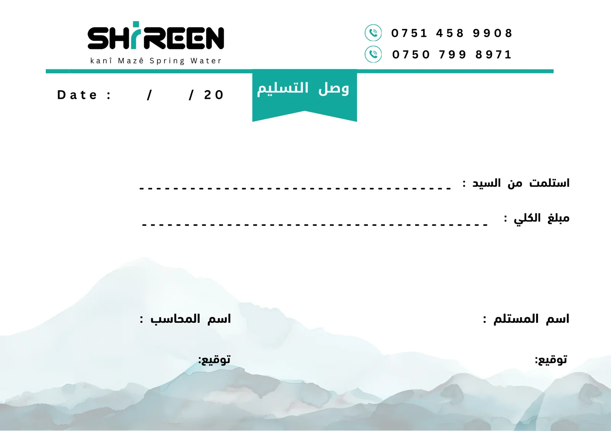

Packaging & presentation / one client, five pieces
Shireen: from bottle
to carton to pitch.
- Client
- Shireen Water Factory — Duhok
- Pieces
- Label, three cartons, company profile, receipt
- Languages
- English, Kurdish, Arabic
- My role
- Full design of all three, including the child images

01
Project Overview
Shireen is spring water from the Gara Mountain in Duhok. I designed three pieces for the company: the kids' bottle label, the 12-bottle carton in two versions, and a company profile. Later I added two more pieces: a carton for the «Mini Baby» baby-water line and a delivery receipt.
02
Design Challenge
Each piece has a different reader — a child and parent at the shelf, a distributor carrying a carton, a business client getting to know the factory — but they all had to look like one family.
03
Design Approach
A label that talks to kids in two languages.
- Pink signals the range: a light pink background with soft clouds, instead of the usual water blue.
- A baby girl holding the bottle: an image I created, with toys around her, so parents know who it's for without reading.
- Two independent faces: an English «SHIREEN» face and a Kurdish «شيرين» face, each with its own bold wordmark and tagline.
- Information on one edge: the mineral table, barcode, QR and ISO marks grouped in a high-contrast panel, away from the image.
One carton, two versions, the same system.
- Contents
- 12 bottles × 330 ml
- Flat size
- 895 × 445 mm
- Panels
- Two 250 mm faces, two 185 mm sides
- Versions
- Pink (girl), blue (boy)
- A girl and a boy from the same family: two images I created in the same style and pose — sitting and holding the bottle — so the versions read as a pair.
- Colour separates the versions; everything else stays put: the logo, text, barcode and table sit in the same places on both. Only the colour and the child change.
- An extension of the label: the same English and Kurdish faces at a larger size, so the carton on the shelf looks like the bottle inside it.
- Every panel has a job: the wide faces carry the name and image, one side the barcode, the other the mineral table, and the top flaps the factory and contact details.
- Built for carrying and storage: a die-cut handle on top, a «this way up» arrow on the face, and recycling and storage icons.
A profile that runs from spring to doorstep.
- Type
- Company profile & product catalogue
- Format
- 10 presentation slides, 16:9
- Language
- English
- Reader
- Clients, distributors, businesses
- The story follows the water: the source in the mountain, then purification, standards, products, distribution and contact.
- One colour for the brand: water green for cards and icons on light backgrounds, with no extra colours.
- The mountain returns: a watercolour mountain along the bottom of the slides ties the profile to the Gara Mountain.
- Numbers in cards: each key figure gets its own card and icon, and the five purification stages are numbered in order.
- A small label above every title: a section tag such as COMPANY OVERVIEW tells readers where they are.
- Editable by the client: built in PowerPoint with system fonts, so the company can update its figures itself.
The same carton, made softer for babies.
- The same dieline as the kids' carton: 895 × 445 mm flat, two 250 mm faces and two 185 mm sides, with a die-cut handle on top.
- A gentler world: light blue, a dotted background, clouds and stars, a sleeping baby in a nightcap, and a teddy bear.
- A badge for the line: «Mini Baby» in white on a navy oval with yellow stars, while the SHIREEN logo stays on a side panel.
- Two language faces: an English face, «Healthy Baby Water», and an Arabic face, «مياه صحية للأطفال», each with the 12 × 330 ml count.
- Information on the sides: one side carries the SHIREEN logo, barcode and certification marks; the other the chemical analysis table in Arabic and English and the ISO marks.
A daily form in the brand's colours.
- The brand at the top: the SHIREEN logo on one side and the two phone numbers with teal icons on the other, above a teal rule.
- A title on a ribbon: «وصل التسليم» in white on a teal tab hanging from the rule.
- Fields that are quick to fill: received from, total amount, the receiver's and the accountant's names with space to sign, and the date — on dashed lines with plenty of room.
- The mountain again: the soft watercolour mountain from the company profile runs along the bottom.
04
Final Deliverables
- Bottle label330 ml, kids' line — English and Kurdish faces
- Carton12 × 330 ml, pink and blue versions — 895 × 445 mm flat
- Company profile10 slides, 16:9, built in PowerPoint
- Mini Baby carton12 × 330 ml — English and Arabic faces
- Delivery receiptArabic form with the brand header
05
Project Gallery
01 / The label


02 / The carton


03 / The company profile


04 / The Mini Baby carton

05 / The delivery receipt

Need packaging from label to carton?
From the label to the carton to the company profile — send the sizes, languages and mandatory information.